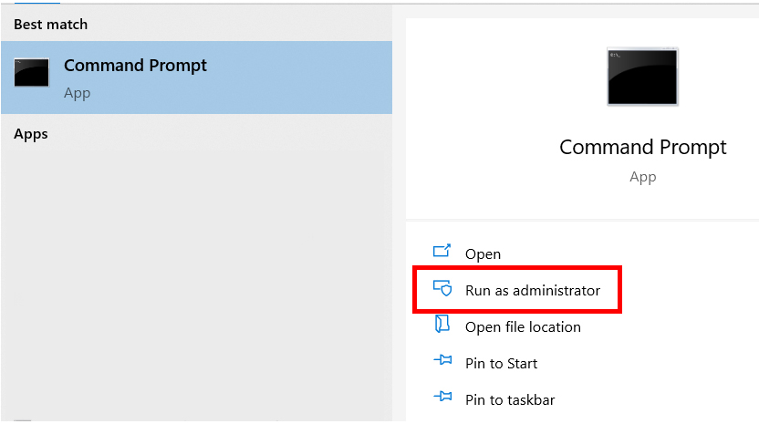
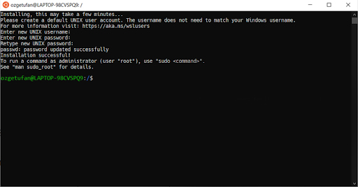
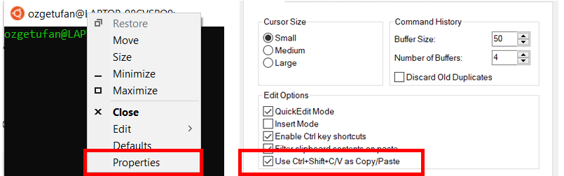

WSL (Windows Subsystem for Linux)
WSL is an installation of a Linux environment "inside" your Windows (Win10 or Win11).
Warning
You must have Windows 10 or Windows 11 to be able to follow these steps.
To install WSL, open command prompt as administrator.

Run the following command:
This will start the process to install WSL on your device. Once the installation is complete, you will need to reboot your device.
After the reboot, wait a couple of seconds for the Ubuntu terminal to open and complete the installation. It will then ask you to specify a username and password.

Once you complete this step, your WSL is ready to use!
Note
You will not be able to use Ctrl + C/V for Copy/Paste on the Ubuntu terminal. Instead, go to Properties by right-clicking on the top of the terminal and enable Use Ctrl+Shift+C/V as Copy/Paste.
